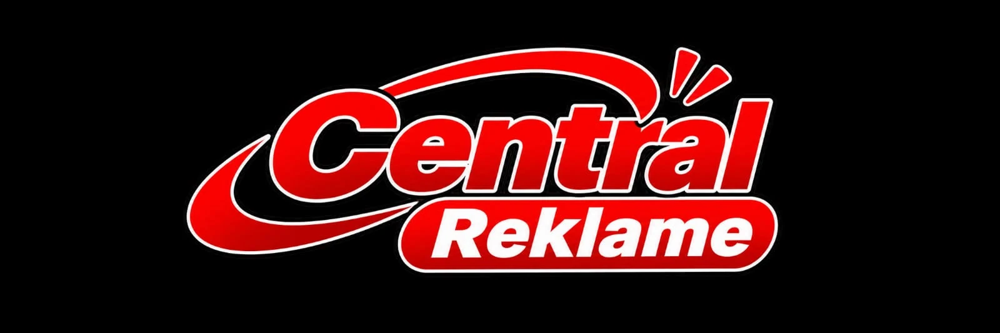
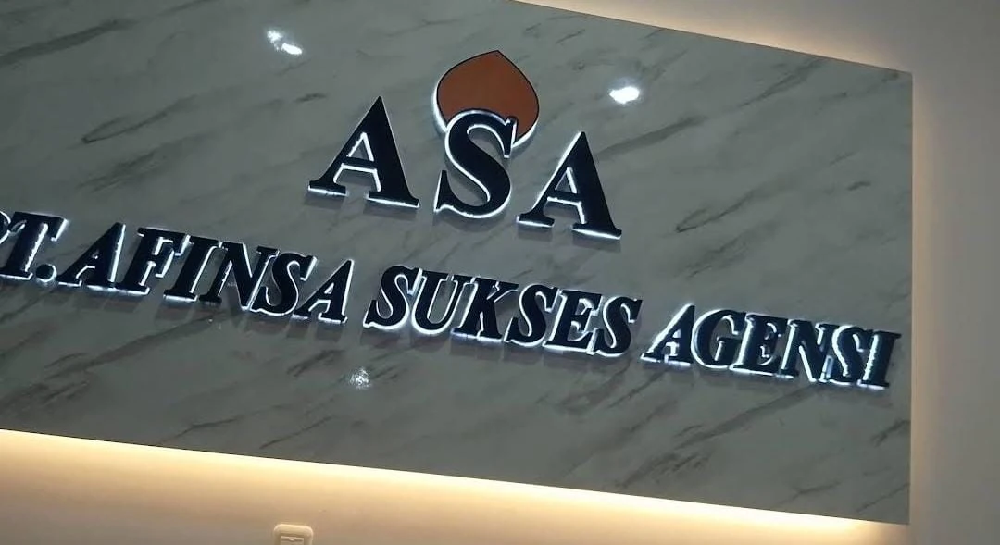

Konsultasi kebutuhan
Diskusikan tujuan, lokasi, ukuran, dan karakter visual yang dibutuhkan.

Konsultasi Proyek↗CENTRAL REKLAME & ADVERTISING
From illuminated signage to architectural branding. We turn your business identity into a powerful visual presence.
Spesialis pembuatan neon box, letter timbul, signage gedung, dan berbagai media reklame profesional.
VISUAL REFERENSI INDUSTRI SIGNAGE — BUKAN KLAIM PROYEK / KLIEN CENTRAL REKLAME
\nBUILT TO BE SEEN
Kami membantu bisnis tampil lebih menonjol melalui produksi reklame, signage, dan media promosi yang dirancang untuk memperkuat karakter brand di ruang nyata.
Dari ide, proses produksi, hingga pemasangan — satu tempat untuk kebutuhan visual bisnis Anda.
Mulai diskusi ↗WHAT WE CREATE
Solusi produksi reklame dan media promosi untuk kebutuhan toko, kantor, gedung, hingga ruang komersial.

SIGNAGE IN CONTEXT
Referensi visual industri untuk menunjukkan bagaimana signage menyatu dengan arsitektur dan identitas ruang.
SELECTED VISUAL DOCUMENTATION
Dokumentasi visual dari arsip foto yang diberikan. Pilih kategori untuk menjelajahi berbagai contoh signage, produksi, dan instalasi.
FROM IDEA TO INSTALLATION
Setiap kebutuhan memiliki proses. Kami membantu Anda bergerak dari gagasan menuju visual yang siap hadir di ruang nyata.
Diskusikan tujuan, lokasi, ukuran, dan karakter visual yang dibutuhkan.
Matangkan arah desain dan kebutuhan produksi sebelum pengerjaan.
Proses pembuatan elemen reklame sesuai kesepakatan proyek.
Penempatan dan pemasangan media reklame di lokasi yang ditentukan.
Pemeriksaan tampilan dan hasil pemasangan sebelum pekerjaan diserahkan.
WORDS FROM CUSTOMERS
“Pengerjaan nya teliti, cepat, hasil sangat memuaskan. Sangat Recommended untuk pembuatan segala jenis neon box.
“Saya pesen neon box disini alhamdulillah lampunya awet dan bergaransi 5thun. Ownernya juga amanah jika ad kendala pada neon boxnya segera diperbaiki.
“Sangat recomended tempatnya bkin neon box, papan nama, neon flex, baliho, ngurus pajak reklame juga bisa. Owner nya sangat baik mskipun banyak permintaan tetap dilayani dg baik.
Kutipan ulasan ditampilkan sebagaimana diberikan oleh pemilik website.
LET'S BUILD YOUR VISIBILITY
SIDOARJO, EAST JAVAKonsultasikan kebutuhan reklame dan media promosi Anda bersama Central Reklame.
Hubungi Kami Sekarang ↗FIND OUR WORKSHOP
Depan Samsat Sidoarjo, Jl. Raya Cemeng Kalang No.12, Kabupaten Sidoarjo, Jawa Timur 61234.
Buka Google Maps ↗